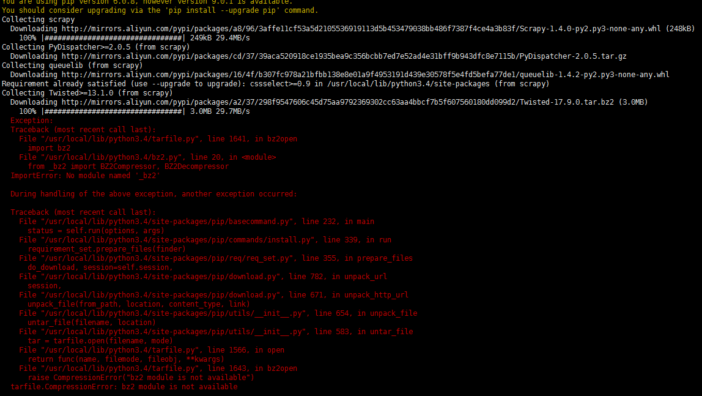

之前python在用pip安装scrapy模块的时候遇到过这个情况，但只是记笔记没有总结出来，今天又遇到了一次，索性博客记录一下。

解决方案
安装 bzip2-devel：
方法一：
yum install bzip2-devel
方法二：
如果不行，可以编译安装：
wget http://www.bzip.org/1.0.6/bzip2-1.0.6.tar.gz && tar -zxf bzip2-1.0.6.tar.gz && cd bzip2-1.0.6 && make -f Makefile-libbz2_so && make && make install
安装好后python需要重新编译
下载一个同版本的python，解压后编译安装：
./configure && make && make install
注意：编译安装的路径保持与以前一致（./configure –prefix=），这样不会影响之前安装的所有模块和python的正常使用

360安全网站扫描扫到抓取网站链接就不动了，扫了一周了，是什么原因？
点赞！b2517b3cd202038f115313f37018b677写的真好
博主加个微信可以嘛，找了许多你的联系方式最终发现只能留言
细心可以看到邮件